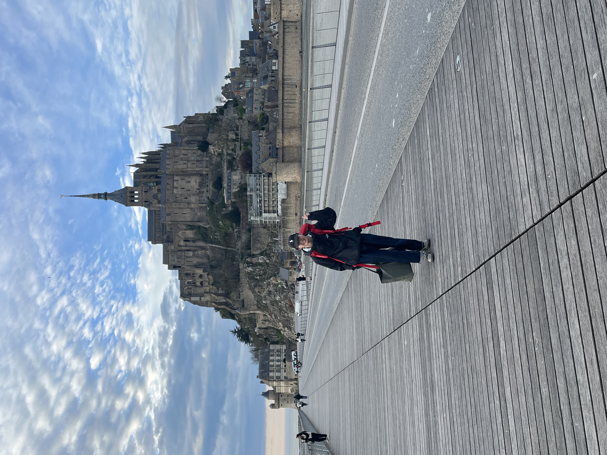
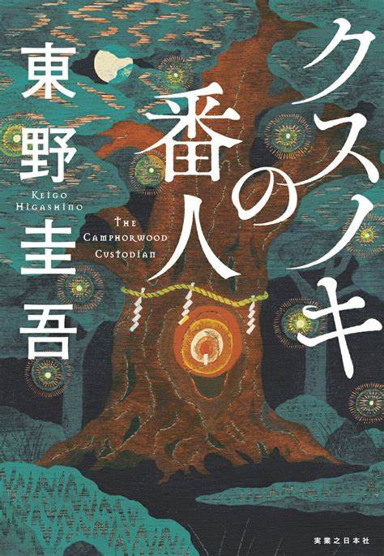

Interests
多分多趣味です。これっていう3つ挙げるとするなら音楽、旅、読書です。
ちょいとそれぞれ紹介させてくださいまし。読んで頂けると嬉しいので、何卒何卒です。
それではどぞー。
Music

音楽がとにかく好きで聴く他に、
演奏や自分で曲を考えたりしています。
また、Spotifyの2023年総再生時間は7万時間です。
今年はSpotifyの総再生時間を10万時間目指して日々新しい音を探し、堪能しています。。。
おすすめの曲などあれば、是非教えてもらいたいです。
Travel
旅も好きです。
2024年の3月にはヨーロッパで一人旅をかましてきました。
この写真に写っているのは、フランスにあるモンサンミッシェルという孤島です。
大学在学中にあと5回は海外を旅したいと思っています。
日本も行ったことがない土地がたくさんあるので訪れてみたいです。
かなり四国が気になってます。。。
Reading
芸術に関する書物を読むのが、最近のマイブームです。
1年間で100冊読むことを目標としていますが、
Life is Tech!が始まって以降、読めてません。。。
一番好きな著者は東野圭吾。
去年出版されたこのクスノキの番人は、
東野圭吾にしては珍しいハッピーエンドなため非常に良きです。